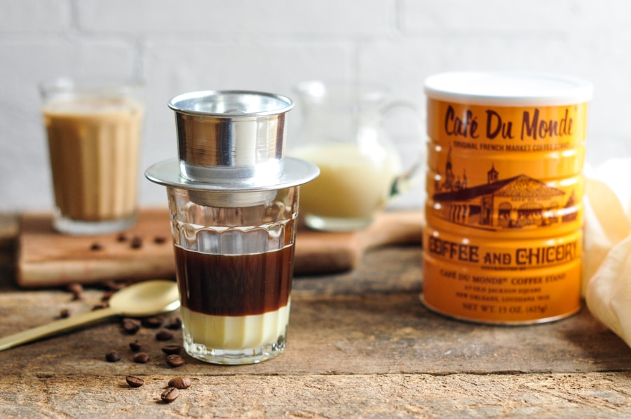

Vietnamese Coffee Recipe

Description
Vietnamese coffee is an intensely strong and sweet coffee, that’s sure to dissolve your morning daze and perk you up for the day. Its dark roast coffee and potent condensed milk, slowly dripped through a metal filter (phin) make this a unique coffee.
In Vietnam, coffee, whether it’s brewed and served at home or in restaurants, is brewed leisurely (i.e. less intense than how I typically brew pour over coffee). Hot coffee (cafe nong) is preferred in the morning, while iced coffee (cà phê sữa đá) is saved for the heat later in the day.
Ingredients
- 3 tablespoon ground chicory coffee (e.g. Cafe Du Monde, Trung Nguyen)
- 2 tablespoons sweetened condensed milk
- 1 cup hot water
Directions
- Pour the ground coffee into a Vietnamese phin filter base. Place the phin filter strainer on top of the coffee.
- Pour the sweetened condensed milk into a glass.
- Place the phin assembly on top of the glass. Pour hot water into the phin filter. Place the phin filter lid on top, and let the coffee drip through the filter into the glass.
- Stir well before serving.
- Enjoy!
Back to Home